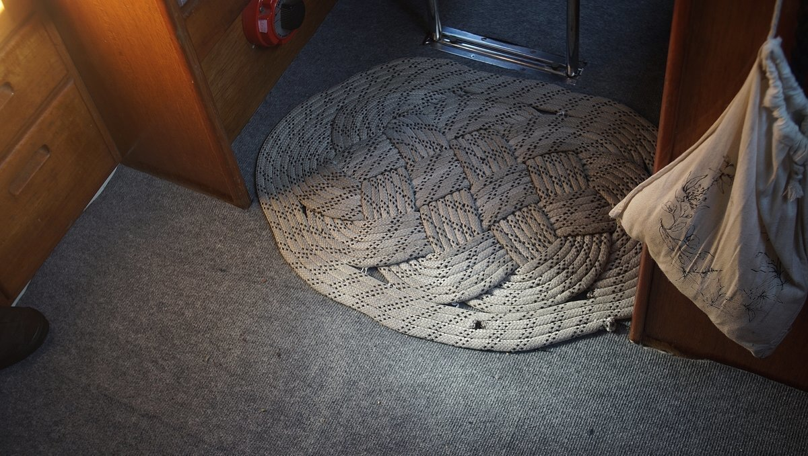

living aboard in winter
Living aboard in areas with hard winters is tricky, especially if your boat is not insulated. And that is a problem since most boats aren't. Condensation in lockers can damage wood, and cause rot and mold. A boat that isn't insulated will cost more to heat.
To keep the interior dry, it's necessary to get rid of the moisture generated by cooking and breathing. To dry the space out you need to allow air from outside into the cabin, and then heat it. The heat won't stay if your boat isn't insulated, but winter isn't the time to add insulation(click to see insulation options), it's better to wait for a drier, warmer season. If you try to use adhesives in cold weather, materials won't bond to the hull.
When we cook, we crack open a hatch to allow the steam to escape. We don't have room for a vented ceiling fan in the galley so this is our best option.
A good winter setup requires both insulation and ventilation in the cabin. Insulation keeps the inside of the boat warm when it is cold out, and ventilation helps to eliminate condensation. Condensation forms because of the difference in temperature and the ambient humidity. There is no miracle solution to eliminating condensation, the only thing to do is to keep the air flowing. Add vents to every locker, elevate cushions, keep berths clear. If the air moves, moisture won't be as much of an issue. See how we insulated our boat.
Adding carpet to floor can help keep your toes warm.
The windows on a boat are another source of heat loss. It is a good idea to make curtains for each window, and in the winter to add a layer of bubble wrap in between it and the window. The bubble wrap adds a layer of protective insulation, acting as a sort of cheap double glaze. The bubble wrap traps condensation, which ought to then dry in the sun during the day. In our limited experience with liveaboard winters in the Pacific Northwest, the condensation always dries. People told us that mold may form between the bubble wrap and window because of the trapped moisture, but we never had issues with this.

If it is possible to remove panels on the cabin ceiling, install polyiso or XPS foam boards. Like the hull, these panels ought to be glued using spray foam or a high strength spray adhesive. Fill any gaps with polyurethane spray foam.
In the winter, a fresh layer of snow on deck can be a very good insulator. Fresh snow has a lot of air pockets between the ice crystals, which can slow the rate of heat loss inside the cabin.

Consider getting a moisture prevention underliner to lay under the cushions so that the air can flow and inhibit the growth of mold and mildrew. It is good practice to lift the cushions to air them out even with a liner.